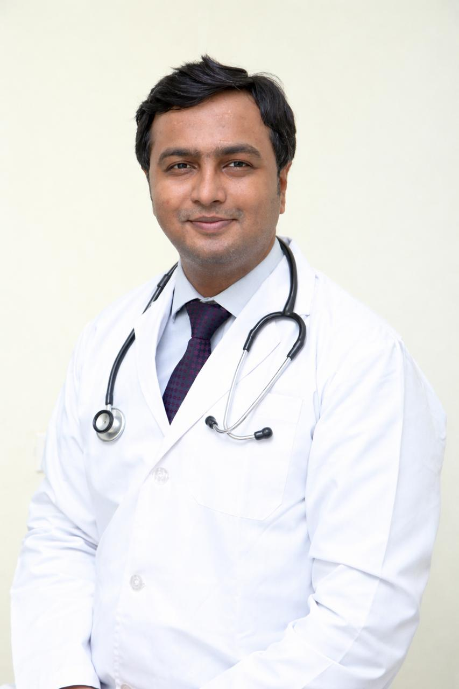

Dr. Mohammed Naseeruddin (M.S. ENT) leads a senior consultant ENT practice from Tolichowki — combining a thorough clinical examination, modern in-house diagnostics, and surgical experience across the full range of ENT procedures. Patients return for something rare in modern medicine: unhurried time.

Verified PracticeDr. Naseer trained as an ENT surgeon and built his practice on a simple commitment — time. Time to listen properly, to examine carefully, and to explain the diagnosis in a way that makes sense to the person in front of him. Patients describe their visits in similar terms: unrushed, clear, and grounded in evidence rather than upsell.
Over the past two decades he has seen all ages — from infants with glue ear to seniors needing cochlear implant assessment — and operates across the full range of ear, nose, and throat surgery. The clinic is equipped for in-house endoscopy, audiometry, and minor procedures, so most patients leave their first visit with a diagnosis, a plan, and the conversation already had with their family.
He is also a regular voice on health television (TV5 News) and an invited speaker at national pediatric and ENT conferences — work he sees as a natural extension of patient communication rather than separate from it.
A clinical and surgical profile built across two decades, with active in-house diagnostics, structured surgical training, and continuing education with national ENT bodies.
Full postgraduate training in ear, nose, and throat surgery, with continuing certification through state medical council registration.
Active surgical practice in FESS, septoplasty, mastoidectomy, microlaryngeal surgery, and grommet/adenotonsillectomy work.
Long experience with glue ear, recurrent infections, snoring and sleep-disordered breathing — well-tolerated by even nervous children.
In-clinic audiometry and hearing-aid fitting from leading global brands, with a 30-day comfort trial. Cochlear implant candidacy assessments offered.
Bedside Dix-Hallpike, head impulse, and gait testing; Epley manoeuvre for BPPV; rehab-based plans for chronic imbalance and Meniere's.
Regular faculty at OtoMentor, Pedicon, and regional CME programmes — case-based sessions on AOM, otitis externa, and antibiotic stewardship.
These are not slogans. They are how each consultation, examination, and surgery is structured at the clinic.
Every visit includes a proper otoscopy, nasal endoscopy where indicated, and throat examination. Diagnosis precedes treatment.
You leave understanding your condition, your options, and what to expect. Photographs and video from the examination are shared where useful.
Medical management, lifestyle changes, and reassurance are offered before surgery whenever clinically appropriate.
When surgery is the right answer, we do it well — endoscopic, microscopic, and minimally invasive techniques where they suit your case.
A short, honest timeline of training, surgical practice, teaching, and media work.
Full surgical residency in ear, nose, and throat — across general ENT, head & neck, and pediatric subspecialties.
Operating consultant across a multi-specialty hospital network, with surgical lists in sinus, ear, and throat work.
Independent senior practice in Tolichowki, Hyderabad. In-house endoscopy, audiometry, and minor procedures from day one.
Invited faculty on otoscope-based clinical decisions, antimicrobial stewardship for recurrent AOM, and differentiating otitis externa from acute otitis media.
Regular guest on TV5 News Telugu, discussing sinusitis, allergy, snoring, and hearing care for a general audience.
Two decades in practice, a consistent reputation among patients and referring colleagues, and a clinic that still has time to actually listen.
A short, representative list of where Dr. Naseer has appeared as a speaker, panellist, or expert voice.